Himalayan trail experiences
Curated Himalayan journeys
Choose a way to walk — its treks open in a window.
Not sure where to start? Let us craft your perfect Himalayan journey.
Get a personalised plan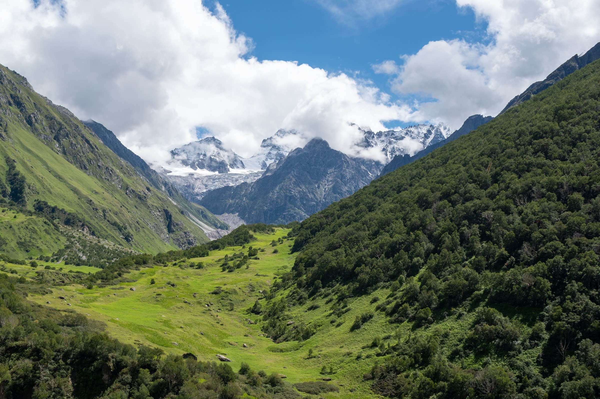
Our promise to you
★★★★★
Ravi Kumar SharmaChar Dham · May 2024
★★★★★
Priya MehrotraFamily Char Dham · June 2024
★★★★★
Abhishek SinghPanch Kedar · Sept 2024
★★★★★
Sunita GoyalSolo Char Dham · Oct 2024
★★★★★
Vikram TiwariAdi Kailash · July 2024
★★★★★
Nitin KapoorCorporate Do Dham · May 2024
Where the path becomes the prayer
Real stories from real yatris — 2024 batches
“The entire Char Dham yatra was organized flawlessly. Kedarnath at sunrise — a moment I'll carry forever.”
“We were a family of 8 with two senior citizens. Prince ji personally ensured wheelchair at Yamunotri. Exceptional care!”
“Panch Kedar was my bucket list item. Tungnath at golden hour — indescribable. The team's mythology knowledge added so much depth.”
“First-time pilgrim — the WhatsApp response was instant, every query answered in minutes. Like travelling with family.”
“Witnessing the OM naturally on Om Parvat moved me to tears. All Inner Line Permits handled seamlessly.”
“Corporate group of 20 — Kedarnath helicopter was seamless, logistics flawless. Already planning next year!”
-
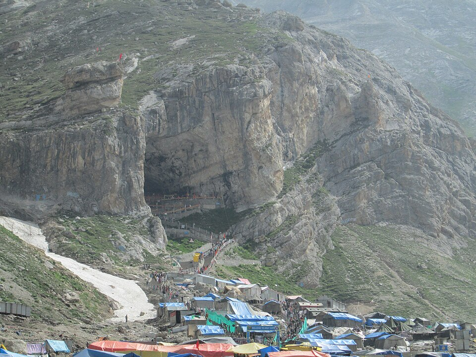
Amarnath Yatra
“Divine Ice Lingam Darshan” 5–7 Days · Moderate · 3,888 m₹17,999 onwardsBook Amarnath Yatra -
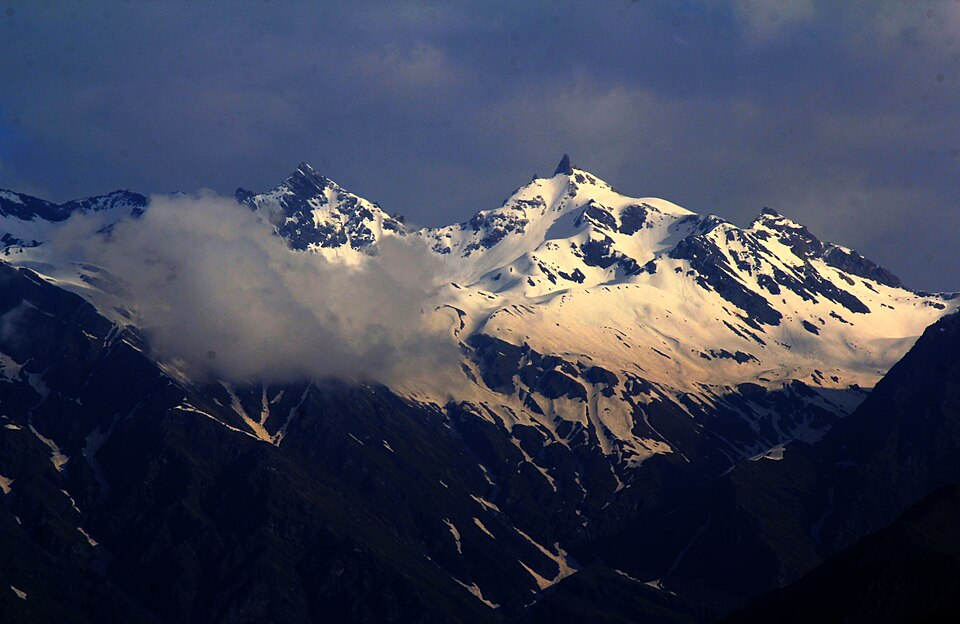
Shrikhand Mahadev
“India's toughest pilgrimage” 6–8 Days · Hard · 5,227 m₹18,999 onwardsBook Shrikhand Mahadev -
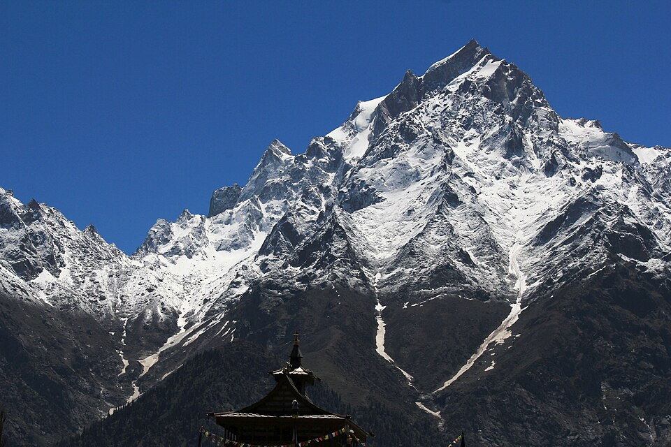
Kinner Kailash Parikrama
“Mystical Himalayan energy” 7–9 Days · Hard · 6,050 mOn requestBook Kinner Kailash Parikrama -
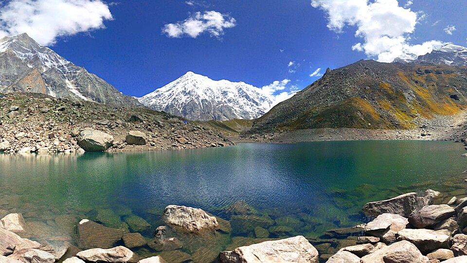
Satopanth Tal
“Sacred lake of the Holy Trinity” 6 Days · Moderate · 4,402 m₹16,999 onwardsBook Satopanth Tal -
Manimahesh Yatra
“Shiva's abode in Himachal” 3–5 Days · Moderate · 4,080 m₹12,999 onwardsBook Manimahesh Yatra -
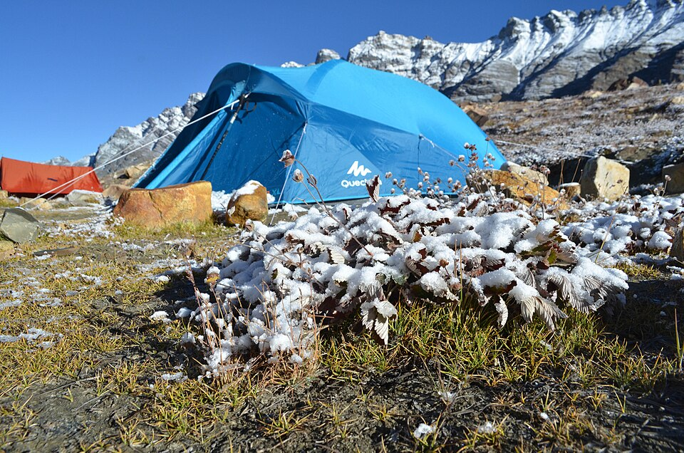
Vasuki Tal
“Alpine lake near Kedarnath” 4–5 Days · Moderate · 4,135 m₹13,999 onwardsBook Vasuki Tal
-
Valley of Flowers + Hemkund Sahib
“500+ wildflower species” 5–6 Days · Moderate₹15,999 onwardsBook Valley of Flowers + Hemkund Sahib -
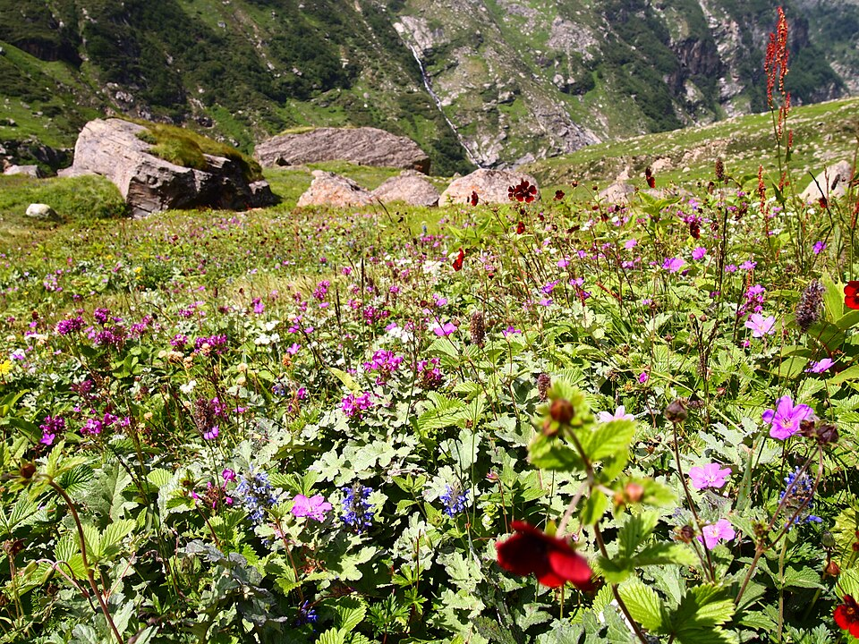
Pin Parvati Pass
“Extreme Himalayan crossover” 9–11 Days · Hard · 5,319 m₹28,999 onwardsBook Pin Parvati Pass -
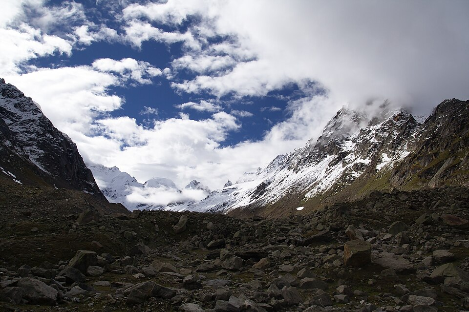
Hampta Pass
“Lush valleys to Lahaul desert” 4–5 Days · Moderate₹11,999 onwardsBook Hampta Pass -
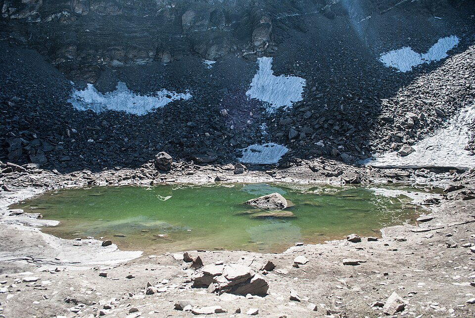
Roopkund
“The skeletal mystery lake trail” 7–8 Days · Moderate–Hard₹16,999 onwardsBook Roopkund -
Gangotri – Tapovan
“Base of the mighty Shivling” 6–7 Days · Hard₹19,999 onwardsBook Gangotri – Tapovan -
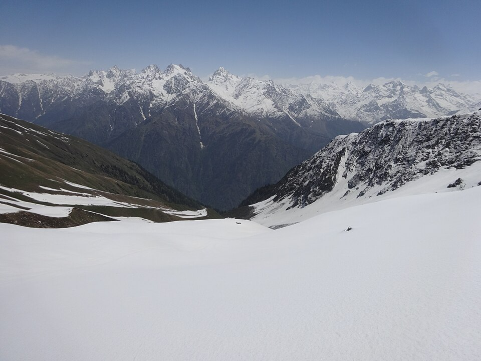
Sar Pass
“Snow slides & alpine forest trails” 5 Days · Moderate₹10,999 onwardsBook Sar Pass
-
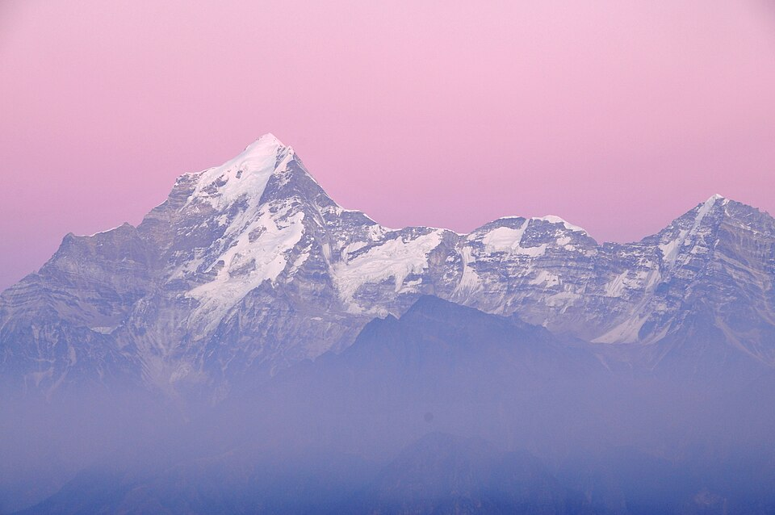
Kuari Pass
“Nanda Devi panoramic views” 5–6 Days · Moderate₹12,999 onwardsBook Kuari Pass -
Deoriatal
“Mirror lake beneath Chaukhamba” 2–3 Days · Easy₹5,999 onwardsBook Deoriatal -
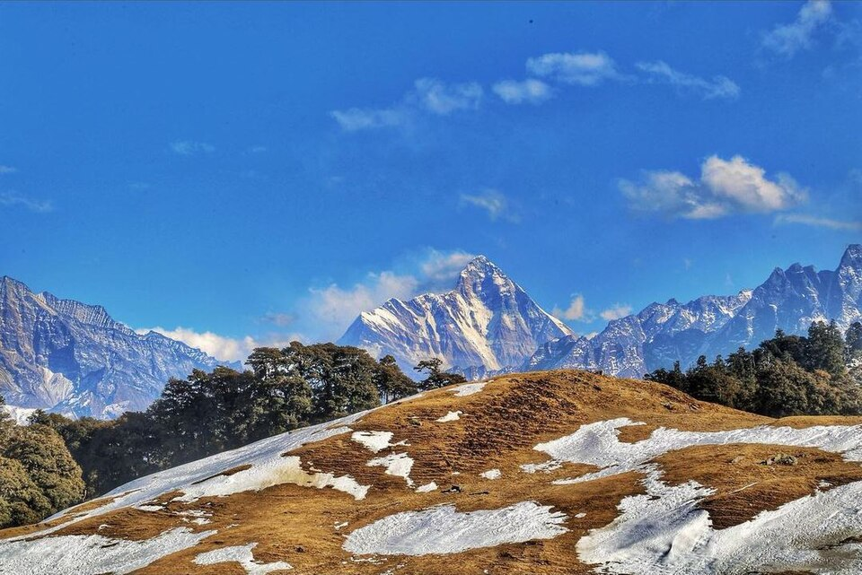
Gorson Bugyal (Auli)
“Open meadows & ski landscapes” 2–3 Days · Easy₹6,999 onwardsBook Gorson Bugyal (Auli) -
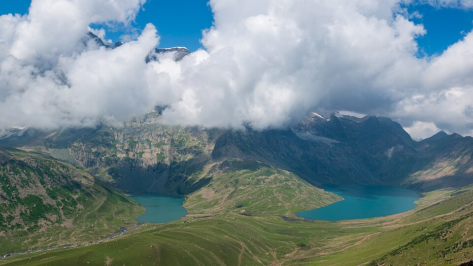
Kashmir Great Lakes
“7 alpine lakes, unreal beauty” 7–8 Days · Moderate₹18,999 onwardsBook Kashmir Great Lakes
-
Triund
“Camp under Himalayan stars” 2 Days · Easy₹4,999 onwardsBook Triund -
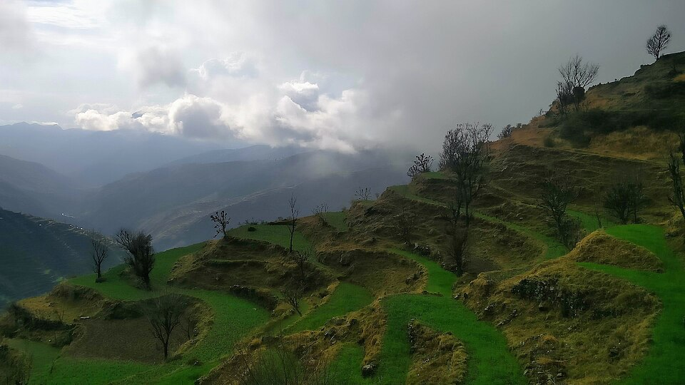
Nag Tibba
“Perfect beginner summit” 2–3 Days · Easy₹4,499 onwardsBook Nag Tibba -
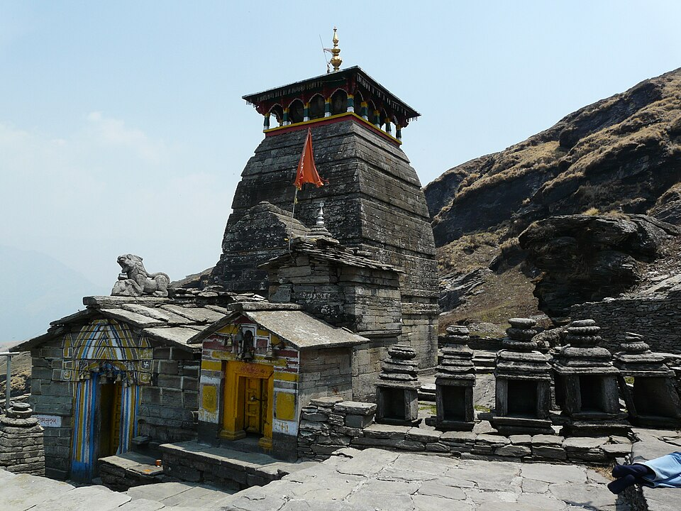
Chopta + Chandrashila
“Mini Switzerland of India” 2–3 Days · Easy₹5,499 onwardsBook Chopta + Chandrashila